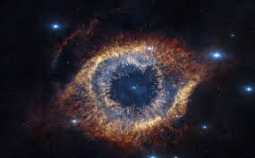

Antes de tudo, é importante ressaltar que há duas teorias sobre a origem do universo: a teoria Evolucionista ou Científica e a teoria Criacionista ou Religiosa
.Como a segunda, refere-se a crenças, no caso, religião, para não interferir neste âmbito pessoal, a teoria Evolucionista é a que utilizaremos como referência.
Na astronomia, o Universo corresponde ao conjunto de toda a matéria, energia, espaço e tempo existente.
Acredita-se que o Universo originou-se de uma grande explosão… …O Big Bang
"A teoria do Big Bang descreve a origem do Universo a partir da explosão violenta de uma partícula muito densa e extremamente quente que teve início há 13,8 bilhões de anos, aproximadamente. Essa expansão não cessou, o que pode ser observado por meio do afastamento das galáxias. Essa é a teoria mais aceita pela comunidade científica para o surgimento do Universo, tendo sido elaborada na década de 1920 e aperfeiçoada à medida que os estudos sobre o cosmos foram se tornando mais complexos. Existem elementos que atestam a teoria do Big Bang, mas os trabalhos que buscam por novos indícios da sua ocorrência continuam" Veja mais sobre "Big Bang" em: https://brasilescola.uol.com.br/geografia/big-bang.htm
Ele reúne os astros: planetas, cometas, estrelas, galáxias, nebulosas, satélites, dentre outros.Alt + Z = marcação de parágrafo